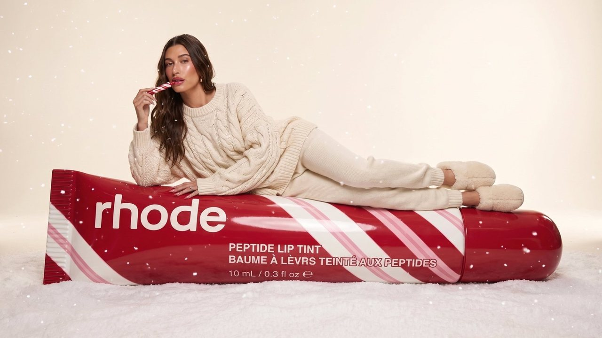

Editie 2026 · Portfolio
DylanProtasi
Content en marketing voor fashion en film. Campagnes, trailers en editorials, van idee tot beeld.
Content en marketing voor fashion en film. Campagnes, trailers en editorials, van idee tot beeld.
 01
01Stage als marketingassistent: trailers en teasers gemonteerd (The Strangers: Chapter 3, Kangaroo, Deep Water), quizzes ontworpen, contentkalenders beheerd, screening- en scriptanalyses gemaakt en de campagne voor de film Backrooms opgezet.
Lees verder → 02
02Volledige marketing van een modemerk zonder marketingafdeling: socials, Meta Ads, shoots en AI-beeld.
Lees verder → 03
03Dagstage op een trunkshow in Brussel, waar ik de content opnam, en een eventconcept als eindopdracht: The Fearless Confessional.
Lees verder → 04
04Transmediaal retailconcept voor Maasmechelen Village, met businessmodel en klantreis.
Lees verder → 05
05Eigen magazine als eindwerk van jaar 2, van concept tot lay-out.
Lees verder →
06Fictieve kerstcampagne: candy cane-tubes, gingerbread en een kerstboomdoos met rode strik.
Lees verder → 07
07Ruwe winterlook voor mannen i.p.v.
Lees verder →08Cinematografische grooming-productie tijdens golden hour.
Lees verder → 09
09Schoolopdracht: een Instagram-carrousel in Photoshop, volledig in de stijl van het merk.
Lees verder →Ik ben Dylan, een creatieve en leergierige jongen met een passie voor media, fashion en de filmindustrie. Ik hou mij vooral bezig met grafisch ontwerp, conceptontwikkeling en video-editing. Ik combineer creatief denken met een scherp inzicht in doelgroepgericht werken, zowel zelfstandig als in teamverband.